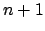
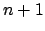
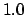
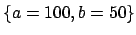
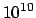
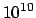

It is possible to fit functional forms to data points in datafiles using the
fit command. A simple example might be:2.7
f(x) = a*x+b
fit f() 'datafile' index 1 using 2:3 via a,b
The coefficients to be varied are listed after the keyword ``via'';
the keywords index, every and using have the same
meanings as in the plot command.2.8
This is useful for producing best-fit lines2.9, and also has
applications for estimating the gradients of datasets. The syntax is
essentially identical to that used by gnuplot, though a few points are worth
noting:
- When fitting a function of
 variables, at least  columns (or
rows - see section 3.3) must be specified after the
using modifier. By default, the first columns are used. These
correspond to the values of each of the inputs to the function, plus
finally the value which the output from the function is aiming to match.
variables, at least  columns (or
rows - see section 3.3) must be specified after the
using modifier. By default, the first columns are used. These
correspond to the values of each of the inputs to the function, plus
finally the value which the output from the function is aiming to match.
- If an additional column is specified, then this is taken to contain the
standard error in the value that the output from the function is aiming to
match, and can be used to weight the datapoints which are input into the
fit command.
- By default, the starting values for each of the fitting parameters is
. However, if the variables to be used in the fitting process are already
set before the fit command is called, these initial values are used
instead. For example, the following would use the initial values
:
f(x) = a*x+b
a = 100
b = 50
fit f() 'datafile' index 1 using 2:3 via a,b
- As with all numerical fitting procedures, the fit command comes
with caveats. It uses a generic fitting algorithm, and may not work well with
poorly behaved or ill-constrained problems. It works best when all of the
values it is attempting to fit are of order unity. For example, in a problem
where
 was of order , the following might fail:
was of order , the following might fail:
f(x) = a*x
fit f() 'datafile' via a
However, better results might be achieved if were artificially made of
order unity, as in the following script:
f(x) = 1e10*a*x
fit f() 'datafile' via a
- A series of ranges may be specified after the fit command, using
the same syntax as in the plot command, as described in
section 2.7. If ranges are specified then only datapoints falling
within these ranges are used in the fitting process; the ranges refer to each
of the variables of the fitted function in order.
- For those interested in the mathematical details, the workings of the
fit command is discussed in more detail in chapter 7.
At the end of the fitting process, the best-fitting values of each parameter
are output to the terminal, along with an estimate of the uncertainty in each.
Additionally, the Hessian, covariance and correlation matrices are output in
both human-readable and machine-readable formats, allowing a more complete
assessment of the probability distribution of the parameters.
Dominic Ford, 24 November 2006